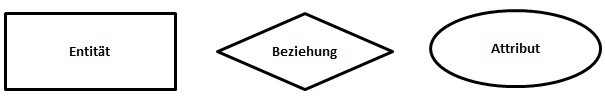

Rationale Datenbanken;
Eine relationale Datenbank kann man sich als eine Sammlung von Tabellen (den Relationen) vorstellen, in welchen Datensätze abgespeichert sind. Jede Zeile (Tupel) in einer Tabelle ist ein Datensatz (record). Jedes Tupel besteht aus einer Reihe von Attributwerten (Attribute = Eigenschaften), den Spalten der Tabelle. Relation heisst Beziehung. Das bedeutet das Relationales Datenbankmodell unter anderem auch auf Beziehungen aufbaut mit anderen Tabellen in einer Datenbank.
Datenbanken Modellieren.
Eine Datenbank kann man gut oder schlecht modellieren, man spricht von einer guten Modellierung, wenn eine Datenbank eine: Redundanzfreie Datenspeicherung und hohe Datenkonsistenz hat. Eine redundanzfreie Datenspeicherung liegt dann vor, wenn jede Information in einer Datenbank genau einmal vorkommt. Des Weiteren muss eine hohe Datenkonsistenz verfolgt werden, so dass Daten eindeutige Informationen darstellen. Es gibt ein Paar neue Begriffe welche man zum Datenbank Modellieren kennen sollte:
Begriff |
Erklärung |
|
Entität (Tabellenname): |
Eine Entität stellt ein Objekt eines Themenkreises dar, welches Elemente mit gleichen Merkmalen beinhaltet. Beispiele für mögliche Entitäten sind: Firma, Student, Kurs und Professor. |
|
Entitätsmenge (Alle Datensätze einer Entität): |
Eine Entitätsmenge repräsentiert alle Datensätze, die zu einer Entität gehören. |
|
Relation (Tabelle): |
Eine Relation umfasst eine Entität inklusive der dazugehörigen Entitätsmenge. Eine komplette Relation besteht aus einer Entitätsbezeichnung, deren Attributen und Tupeln. |
|
Tupel (Datensatz): |
Ein Tupel repräsentiert alle Merkmalswerte einer Entität einer Entitätsmenge. Alle Tupel einer Entität bilden die Entitätsmenge. |
|
Attribut (Spaltenname): |
Ein Attribut beschreibt genau ein Merkmal eines Tupels in einer Entitätsmenge, zum Beispiel den Namen eines Kunden. |
|
Attributwert (Wert) |
Der Attributwert repräsentiert den Wert, den ein Attribut in einem Tupel annehmen kann, zum Beispiel: Attribut => Name = „Meier“ <= Attributwert |
Wichtiger Hinweis zum Begriff Relation und Tabelle:
Heutzutage werden die Begriffe Relation und Tabelle gleichgesetzt. Das ist leider sehr problematisch, da das Wort „Relation“ im Englischen „Beziehung“ bedeutet. Eine Beziehung hat aber in den Datenbank-Grundlagen eine ganz andere Bedeutung und sagt aus, in welcher Abhängigkeit zwei Tabellen zueinanderstehen.
Die Grundelemente einer Datenbankmodellierung bilden: Entitäten, Beziehungen und Attribute. Diese werden grafisch folgendermaßen dargestellt:
Um was genau es sich bei diesen Elementen handelt, klären die folgenden Punkte:
- Eine Entität ist ein individuell identifizierbares Objekt der Wirklichkeit.
- Eine Beziehung ist eine Verknüpfung / Zusammenhang zwischen zwei oder mehreren Entitäten.
- Ein Attribut ist eine Eigenschaft, die im Kontext zu einer Entität steht.
Das folgende Beispiel eines Datenbank-Modells soll zeigen, wie leicht ein Modell anhand eines realen Beispiels zu erstellen ist:

Erklärung zum Datenbank-Modell: Ein Mitarbeiter hat einen Namen. Ein Projekt hat einen Namen, ein Datum und ein Budget. Ein Mitarbeiter kann mehrere Projekte leiten, aber nur ein Projekt kann von genau einem Mitarbeiter geleitet werden.
Primärschlüssel (primary key)
Der Primärschlüssel kommt in relationalen Datenbanken zum Einsatz und wird zur eindeutigen Identifizierung eines Datensatzes verwendet. In einer normalisierten Datenbank besitzen alle Tabellen einen Primärschlüssel. Der Wert eines Primärschlüssels muss in einer Tabelle einmalig sein, da er jeden Datensatz eindeutig kennzeichnet. Des Weiteren wird er häufig als Datenbank-Index verwendet, um die Daten auf der Festplatte abzulegen. Es handelt es sich um einen eindeutigen Schlüssel, wenn eine Spalte der Tabelle gespeichert wird. Als Spalte kann ein Attribut des Datensatzes verwendet werden, das für jeden Eintrag in der Tabelle einen einmaligen Wert annimmt. Als eindeutiges Primärschlüsselattribut könnte beispielsweise die Sozialversicherungsnummer in einer Mitarbeitertabelle verwendet werden.
Fremdschlüssel (Foreign Key)
Der Fremdschlüssel kann Bestandteil einer Tabelle in einer relationalen Datenbank sein. Dabei handelt es sich um eine Schlüsselspalte, die auf einen Primärschlüssel einer anderen oder aber derselben Tabelle verweist. Es kann sich dabei um einen einfachen oder zusammengesetzten Schlüssel handeln. Das hängt davon ab, wie der Primärschlüssel der referenzierten Tabelle aufgebaut ist.
was für Fremdschlüsselarten gibt es?
Aufgrund der referentiellen Integrität kann der Fremdschlüssel nur Werte annehmen, die in der Referenztabelle vorhanden sind. Zudem kann eine beliebige Anzahl von Datensätzen den gleichen Fremdschlüsselwert aufweisen.
Beispiel für den Einsatz eines Fremdschlüssels:
In einer normalisierten Tabelle die Kontakte verwaltet, kann beispielsweise zu einer Person ein Unternehmen referenziert werden. In der Tabelle „Ansprechpartner“ wird „Colin Meier“ und ihre Telefonnummer angelegt. Ihr Unternehmen wird aus der Tabelle „Unternehmen“ referenziert, das wäre dann beispielsweise die „ABC GmbH“. Über diese Referenz kann bei einer Abfrage die Anschrift und andere Fakten zum Unternehmen aus der Tabelle „Unternehmen“ abgerufen werden.
Normalisierung von Datenbanken
Unter Normalisierung eines relationalen Datenbankmodells versteht man die Aufteilung von Attributen in mehrere Relationen (Tabellen) mithilfe der Normalisierungsregeln und deren Normalformen, sodass eine Form entsteht, die keine vermeidbaren Redundanzen mehr enthält.
„Warum wird eine Normalisierung durchgeführt?“
Ziel der Normalisierung ist eine redundanzfreie Datenspeicherung zu erstellen. Redundanzfrei bedeutet, dass Daten entfernt werden können, ohne dass es zu Informationsverlusten kommt. Weiterhin soll die Normalisierung Anomalien entfernen. Im Normalisierungsprozess gibt es fünf Normalformen, welche im Folgenden genauer erklärt werden. In der Datenbankentwicklung ist die Dritte Normalform oft ausreichend, um die perfekte Balance aus Redundanz, Performance und Flexibilität für eine Datenbank zu gewährleisten. Natürlich gibt es auch Sonderfälle, z.B. im wissenschaftlichen Bereich, wo eine Datenbank bis zur 5. Normalform normalisiert werden kann bzw. muss.
Ziele der Datenbank-Normalisierung:
- Beseitigung von Redundanzen
- Vermeidung von Anomalien (funktionelle und transitive Abhängigkeiten)
- Erstellung eines klar strukturierten Datenbankmodells
DDL (Data Definition Language)
Die Structured Query Language (SQL) zerfällt grob in zwei Teile:
- Befehle, mit denen Sie in einem Datenbankmanagementsystem Datenbankobjekte, wie Datenbanken, Tabellen, Spalten und Indizes, erstellen, ändern bzw. löschen, sind in der DDL (Data Definition Language) zusammengefasst. Der DDL widmen wir uns in diesem Abschnitt.
- Befehle, mit denen Sie Daten in Tabellen einfügen, bearbeiten und suchen, gehören zur DML (Data Manipulation Language), mit der wir uns im nächsten Abschnitt beschäftigen.
- In dieser Sprache werden die 3 Befehle, Create Alter und Drop verwendet.
Hier ein Paar Befehle und Ihre Beschreibung:
Befehl |
Erklärung |
|
CREATE TABLE [FIRMA]( [FIRNR] INT NOT NULL PRIMARY KEY ,[FIRUSER] VARCHAR(100) NOT NULL ,[FIRTYP] INT NOT NULL); |
Dieser Befehl wird genutzt um eine Tabelle zu erstellen. Dazu benutzen wir den Befehl «Create». Dabei muss man eine neue Tabelle benennen, in unserem Fall jetzt FIRMA, danach werden die Attribute Einzel angegeben und die dazu passenden Datentypen vergeben. |
|
ALTER TABLE [FIRMA] ADD [USTID] VARCHAR(9); |
Mit einem ALTER Befehl haben wir die Möglichkeit, eine Tabelle zu verändern bzw. etwas hinzuzufügen. In diesem Beispiel wird bei der Tabelle Firma noch das Attribut USTID hinzugefügt. |
|
DROP TABLE [FIRMA]; |
Als letzten Befehl der DDL haben wir noch den Befehl Drop mit welchem man Tabellen, Attribute und Datenbanken löschen kann. In dieser Beispiel wird die Tabelle FIRMA gelöscht. |
DCL (Data Control Language)
Die Data Control Language ist dafür zuständig Rechte zu vergeben oder sie zu entziehen dabei werden wir im Allgemeinen nur zwei Befehle für diese Sprachschicht Benutzen nämlich:
- Grant
- Revoke
Als kleines Beispiel will ich alle Berechtigungen für die Datenbank 'FIRMA' für den Benutzer 'Colin @localhost' erteilen. Deswegen erstelle ich zuerst einen Benutzer mit dem Namen Colin:
CREATE USER 'Colin'@'localhost' IDENTIFIED BY '123';
Dabei ist es wichtig zu wissen, dass zwischen «IDENTIFIED BY» das Passwort des jeweiligen Benutzers seinen Platzt findet in unserem Fall 123. Danach kann ich alle Berechtigungen mit der GRANT-Anweisung für den USER Colin auf der Datenbank FIRMA gewähren mit:
GRANT ALL PRIVILEGES ON FIRMA. * TO 'Colin'@'localhost';
Nun hat der USER Colin alle Berechtigungen für die Tabelle, jedoch wollen wir Vielleicht nicht, dass der USER Colin alle Berechtigungen hat. Es gibt nämlich noch weitere Berechtigungs-Typen:
- CREATE: Erlaubt dem Benutzer, neue Datenbanken zu erstellen.
- DROP: Erlaubt einem Benutzer, Datenbanken zu Löschen.
- DELETE: Erlaubt einem Benutzer, einzelne Zeilen in einer Tabelle zu löschen.
- INSERT: Erlaubt einem Benutzer, neue Zeilen in einer Tabelle zu schreiben.
- SELECT: Leseberechtigung für eine Datenbank oder eine Tabelle
- UPGRADE: Erlaubnis, eine Zeile zu aktualisieren
- GRANT OPTION: Erlaubt einen Benutzer weitere Benutzer zu erstellen oder zu löschen.
FLUSH PRIVILEGES;
Widmen wir uns also noch dem letzten Befehl dieser Sprachschicht nämlich REVOKE. Denn REVOKE wird verwendet um, Berechtigungen von Benutzerkonten zu entfernen. Also werde ich wieder alle Rechte vom USER Colin entziehen.
REVOKE ALL PRIVILEGES ON FIRMA. * FROM 'Colin'@'localhost';
FLUSH PRIVILEGES;
DML (Data Manipulation Language)
Unsere Tabellen sind angelegt und warten darauf, mit Daten gefüttert bzw. durchsucht zu werden. Lernen Sie im Folgenden, wie das gemacht wird. Fangen wir also am besten damit an, wie eine Datenbank mit Daten gefüttert werden kann, dies Machen wir mit dem Befehl INSERT.
INSERT INTO <tabelle> (<spalte1>, <spalte2>, ...) VALUES (<wert1>, <wert2>, ...);
Als Beispiel wollen wir einen Datensatz in die Tabelle t_admin einfügen:
INSERT INTO t_admin (adm_user, adm_pass) VALUES ('Meister', 'geheim');
Die Zuordnung, welcher Wert in welche Spalte eingefügt wird, geschieht über die jeweiligen Positionen innerhalb der Klammern; der erste Wert "`Meister"' wird in die erste Spalte "`adm_user"' eingefügt.
Widmen wir uns noch einen weiteren wichtigen Befehl der DML, nämlich dem Befehl UPDATE. Mit UPDATE können Datensätze geändert werden, im SET-Teil wird der neue Wert eingetragen. Es sollte unbedingt auf den WHERE-Teil geachtet werden, sonst werden alle Werte überschrieben. Die Syntax sieht folgendermassen aus:
UPDATE (Tabellenamen) SET (Attribut)= ’hallo’ WHERE x=0;
Mit DELETE können Datensätze gelöscht werden, hierbei muss aber auf die WHERE-Bedingungen achten, Definition ansonsten werden alle Datensätze gelöscht. Dies ist im ersten Beispiel gemacht.
DELETE FROM (Tabellenamen) ;
DELETE FROM (Tabellenamen) WHERE x=0;
DELETE FROM (Tabellennamen) VALUES (‘1’ ‘2’) WHERE x=0;
DQL (Data Query Language)
Die DQL ist die wichtigste Sprachschicht, denn alle Abfragen und Ausgaben werden mithilfe dieser Schicht gemacht. Die Abfrage funktioniert mit sogenannten Query's, welche immer aus dem SELECT-Befehl bestehen. Der SELECT-Befehl ist auch der einzige in der DQL. Die Query's werden dann an den Server geschickt und dieser gibt dann die gewünschten Daten aus, dies ist aber in vielen Situationen nicht so einfach wie es klingt. Der SELECT-Befehl ist immer gefolgt von einem oder mehreren Attributen einer oder mehrerer Entititäten. Mit FROM wird dem Server mitgeteilt, von welchen Tabellen die Attribute stammen. Gefolgt wird das FROM von einer oder mehreren WHERE-Bedingungen. Jetzt kann diese Abfrage noch mit einem GROUP BY ergänzt werden, um die Daten zu bündeln. Wenn jetzt noch eine Bedingung ansteht, kann diese durch ein HAVING ergänzt werden. Jetzt kann dieses Query nocht mit einem ORDER BY verstärkt werden, damit diese Ausgabe noch sortiert wird. Ist eine absteigende Sortierung gefragt, kann das ORDER BY noch durch ein DESC unterstützt werden. Übrigens, Query bedeutet Abfrage und kann jedes Geschlecht der deutschen Sprache annehmen. Hier die Syntax:
SELECT (Attribut) FROM (Tabelle) WHERE x=0 GROUP BY (Attribut) HAVING x=1 ORDER BY (Attribut) DESC;
Datentypen
Ein Datentyp beschreibt, wie der Inhalt einer Variable aussieht, in diesem Fall wie der Inhalt eines Attributes geschrieben werden muss. Es gibt viele Datentypen, sei es für Zahlen, Strings und Daten wie zum Beispiel für das Datum 12.08.2007. Kurze Nebenbemerkung: jeder Buchstabe ist ein Byte gross. Hier sind die wichtigsten Datentypen aufgelistet:
Datentyp |
Speicherplatz |
Optionen |
Beschreibung |
| TINYINT | 1 Byte | [(M)] [U] [Z] | Ganzzahlen von 0 bis 255 oder von -128 bis 127. |
| SMALLINT | 2 Bytes | [(M)] [U] [Z] | Ganzzahlen von 0 bis 65.535 oder von -32.768 bis 32.767. |
| MEDIUMINT | 3 Bytes | [(M)] [U] [Z] | Ganzzahlen von 0 bis 16.777.215 oder von -8.388.608 bis 8.388.607. |
| INT | 4 Bytes | [(M)] [U] [Z] | Ganzzahlen von 0 bis ~4,3 Mill. oder von -2.147.483.648 bis 2.147.483.647. |
| INTEGER | 4 Bytes | [(M)] [U] [Z] | Alias für INT. |
| BIGINT | 8 Bytes | [(M)] [U] [Z] | Ganzzahlen von 0 bis 2^64-1 oder von -(2^63) bis (2^63)-1. |
| FLOAT | 4 Bytes | [(M,D)] [U] [Z] | Fließkommazahl mit Vorzeichen. Wertebereich von -(3,402823466×1038) bis -(1,175494351×10-38), 0 und 1,175494351×10-38 bis 3,402823466×10 38. |
| DOUBLE | 8 Bytes | [(M,D)] [U] [Z] | Fließkommazahl mit Vorzeichen. Wertebereich von -(1,79769×10308) bis -(2.22507×10 -308), 0 und 2.22507×10-308bis 1,79769×10308 |
| REAL | 8 Bytes | [(M,D)] [U] [Z] | Alias für DOUBLE. |
| DECIMAL | M+x Bytes | [(M,D)] [U] [Z] | Fließkommazahl mit Vorzeichen. Speicherbedarf: x=1 wenn D=0, sonst x=2. Ab MySQL 5.1 binär gespeichert, zuvor als String. |
| NUMERIC | M+x Bytes | [(M,D)] [U] [Z] | Alias für DECIMAL. |
| DATE | 3 Bytes | - | Datum im Format 'YYYY-MM-DD'. Wertebereich von 01.01.1000 bis 31.12.9999. |
| DATETIME | 8 Bytes | - | Datumsangabe im Format 'YYYY-MM-DD hh:mm:ss'. Wertebereich entspricht DATE. |
| TIMESTAMP | 4 Bytes | - | Zeitstempel. Wertebereich: 1.1.1970 bis 19.01.2038. Das Format variiert in den MySQL-Versionen. |
| TIME | 3 Bytes | - | Zeit zwischen -838:59:59 und 839:59:59. Ausgabe: hh:mm:ss. |
| YEAR | 1 Byte | [(2|4)] | Jahr zwischen 1901 bis 2155 bei (4) und zwischen 1970 bis 2069 bei (2). |
| CHAR | M Byte(s) | (M) [BINARY] | Zeichenkette fester Länge M. Wertebereich für M: 0 bis 255. |
| VARCHAR | L+1 Bytes | (M) [BINARY] | Zeichenkette variabler Länge, Maximum ist M. Wertebereich für M: 0 bis 255. |
| BINARY | M Bytes | (M) | Zum Speichern binärer Strings, unabhängig vom Zeichensatz. Wertebereich für M: 0 bis 255. Weiterer Typ: VARBINARY |
| BLOB | L+2 Bytes | (M) | Binäres Objekt mit variablen Daten. Weitere Typen: TINYBLOB, MEDIUMBLOB und LONGBLOB. M ist ab Version 4.1 definierbar. |
| TEXT | L+2 Bytes | (M) | Wie BLOB. Ignoriert beim Sortieren & Vergleichen Groß- und Kleinschreibung. Weitere Typen: TINYTEXT, MEDIUMTEXT, LONGTEXT. M ist ab Version 4.1 definierbar. |
| ENUM | 1 oder 2 Bytes | ('val1', 'val2', ...) | Liste von Werten (val1, val2, ...). 65.535 eineindeutige Elemente sind maximal möglich. |
| SET | x Bytes | ('val1', 'val2', ...) | String-Objekt mit verschiedenen Variablen. 64 sind maximal möglich. Speicherbedarf: x ist 1, 2, 3, 4 oder 8. |
Funktionen und Operatoren
Mit SQL Funktionen können bestimmte Werte einer Spalte berechnet oder bestimmte Werte mittels der SQL Funktionen im Nachhinein manipuliert werden.
„Welche SQL Funktionen gibt es?“
Es existieren zwei Arten von SQL Funktionen: SQL Aggregat Funktionen und SQL Skalar Funktionen. Mit SQL Aggregat Funktionen, wie z.B. SUM() oder AVG(), können Tabellenspalten auf ihre Werte zusammengefasst und berechnet werden. Mit SQL Skalar Funktionen, wie z.B. LEN() oder Round(), liefern Einzelwerte auf Basis ihrer Inputvariable zurück. Alle SQL Funktionen können sowohl in der Datenbanksprache T-SQL von Microsoft als auch in der Datenbanksprache PL/SQL von ORACLEverwendet werden und zählen damit zu den grundlegenden SQL Funktionen. Da es mehrere Funktionen gibt, verweise ich auf diese Seite hier, denn dort wird jede Funktion super erklärt. Unten finden sie noch die Operatoren welche bei Funktionen gebraucht werden.
Operator |
Erläuterung |
|
> |
Größer als (geht auch mit größer-gleich, also >=) |
|
< |
Kleiner als (geht auch mit kleiner-gleich, also <=) |
|
= |
Gleich |
|
!= |
Ungleich |
|
BETWEEN |
Ermittelt Minimal- und Maximalwert |
|
LIKE |
Zeichenkettenvergleich |
|
IN |
Array-Vergleich ( analog zu in_array von PHP) |
Joins
Mit einem Join lassen sich Werte aus mehreren SQL Tabellen kombinieren. Statt nun mehrere SELECT Abfragen an verschiedenen Tabellen vorzunehmen, kann man einen einzelnen SQL Befehl eingeben um mehrere Tabellen gleichzeitig abzufragen. Damit ein solcher JOIN funktioniert müssen die Tabellen, welche verknüpft werden, über eine gemeinsame Spalte mittels Foreign Key und Primary Key verbunden werden. In MySQL stehen insgesamt vier verschiedene JOIN-Typen zur Verfügung, und zwar der INNER JOIN, LEFT JOIN, RIGHT JOIN und der FULL JOIN. Der Syntax eines solchen JOINs sieht wie folgt aus:
Select * From tabelle1 JOIN tabelle2 ON tabelle1.PK = tabelle2.FK JOIN tabelle3 ON tabelle1.PK = tabelle3.FK WHERE bedingung;
Der Syntax des INNER JOINS ist gleich dem des LEFT INNER JOINS, nur dass anstelle von LEFT INNER JOIN nur JOIN als JOIN-Typ geschrieben wird. Hierbei wird die Schnittmenge der beiden selektierten Tabellen ausgegeben, welche der unteren WHERE Bedingung entsprechen.

In diesem Beispiel werden die Produkte ausgegeben, welche noch nie bestellt wurden. Um einen solchen JOIN zu erstellen müssen wir die Tabelle "products" und "orders" miteinander verknüpfen. Da wir nur die Produkte ausgeben möchten die noch nie bestellt wurden eignet sich ein LEFT INNER JOIN am besten. Der nächste Schritt ist es zu bestimmen auf (ON) welchen Spalten sie sich gegenseitig joinen sollen, in diesem Fall ist p.id als PRIMARY KEY und orders.product_id als FOREIGN KEY bestimmt. Am Schluss setzt man die Bedingung mit WHERE welche bestimmt das die Spalte orders.id leer sein muss.

Der LEFT bzw. RIGHT OUTER JOIN ist bis auf die fehlende WHERE Bedingung gleich aufgebaut wie der LEFT/RIGHT INNER JOIN.

Der FULL OUTER JOIN wird nur in den seltensten Fällen verwendet, weil er alle Datensätze ausgibt die zwischen den beiden verknüpften Tabellen gleich. Dies führt dazu das oftmals extrem viele Datensätze augegeben werden.